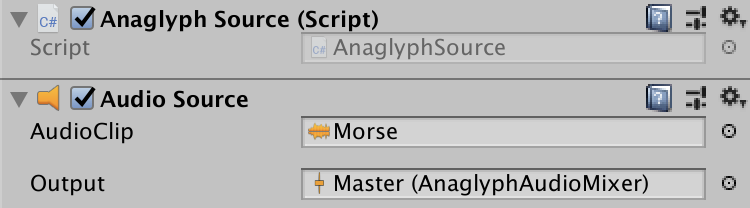
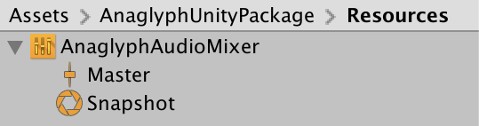

Unity plugin
Setup an Anaglyph audio source
- Add the AnaglyphUnityPackage to the Assets folder of your Unity project.
- Add an Audio Source component to an object in your scene. Set it up (AudioClip, etc.), check it works as intended.
- Add the AnaglyphSource.cs script component to that object.
- Drag and drop the ./AnaglyphUnityPackage/Resources/AnaglyphAudioMixer/Master in the Output field of the Audio Source component.

- Start the scene and move the object with respect to your Scene Audio Listener (Camera) to check the binaural rendering.
- You can tweak Anaglyph presets in the Inspector by selecting the AnaglyphAudioMixer/Master component.

Setup multiple sources
Follow the same steps to create a second audio source, yet have the AnaglyphSource script field Audio Mixer point to another AnaglyphAudioMixer/Master (e.g. duplicate the original AnaglyphAudioMixer with Ctrl+D).
You can use the attributes flagged as ''Anaglyph parameter'' in the AnaglyphConfig.cs file to define changes that will be applied to all the instances of AnaglyphSource upon startup.
Export your game
Unity export target architecture should match anaglyph plugin's architecture (likely 64 bits). On Windows, you'll need to copy the full content of the anaglyph_plugin_data folder into Unity ProjectName_Data/Resources folder (created by Unity build) for Anaglyph to find its dependencies.